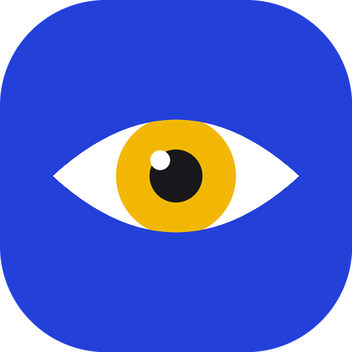

Cerca
«Persona, cerca, al frente»
● ● ● 3 pulsos · 3 pitidos
Hecho en Pasto, Nariño
EyeSight AI usa la cámara del teléfono para avisarle, con voz, vibración y pitidos suaves, los obstáculos que tiene al frente y las zonas de riesgo de su recorrido.
Gratis · Android 8.0 o superior · Versión 1.0.0 (prototipo)

EyeSight AI complementa el bastón y el perro guía; no los reemplaza. Úsela siempre junto con sus ayudas de movilidad habituales.
Cerca
«Persona, cerca, al frente»
● ● ● 3 pulsos · 3 pitidos
Media distancia
«Banca, a media distancia, a la izquierda»
● ● 2 pulsos · 2 pitidos
Lejos
«Automóvil, lejos, a la derecha»
● 1 pulso · 1 pitido
Zona de riesgo
«Atención: hueco a 15 metros»
━━ 1 pulso largo · tono doble
Se controla por voz («repetir», «silencio», «marcar zona») y con gestos en toda la pantalla. Compatible con TalkBack.
Botones grandes en alto contraste, amarillo y blanco sobre negro, con letra de 24 puntos o más y la tipografía Atkinson Hyperlegible.
Con PIN: mapa de zonas de riesgo, historial de alertas, ajustes de voz y vibración, y control total de los datos.
Trabajo de grado de Ingeniería de Software de la Universidad Cooperativa de Colombia, sede Pasto.